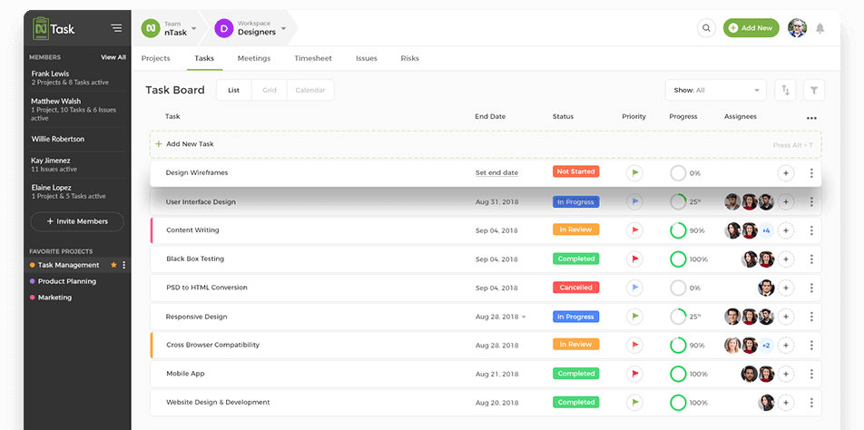

An interactive e-commerce website developed as part of a team project during my studies. The website includes user registration, product catalog, shopping cart, and payment processing features.

A personal project that I designed and developed to help users manage their daily tasks efficiently. The app includes features for task creation, deadlines, and progress tracking.
A fictional weather app concept I created to showcase my skills in working with external APIs. The app provides real-time weather data based on user input and displays forecasts in a user-friendly interface.